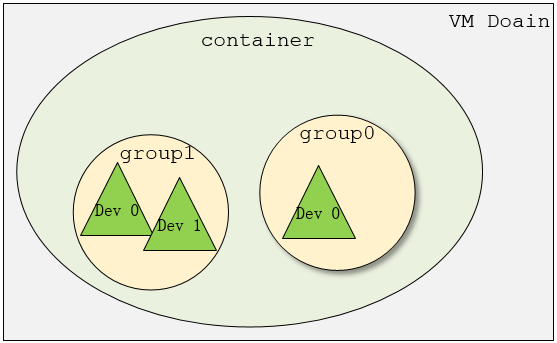

Virtual Function I/O (VFIO) 是一种现代化的设备直通方案，它充分利用了VT-d/AMD-Vi技术提供的DMA Remapping和Interrupt Remapping特性， 在保证直通设备的DMA安全性同时可以达到接近物理设备的I/O的性能。 用户态进程可以直接使用VFIO驱动直接访问硬件，并且由于整个过程是在IOMMU的保护下进行因此十分安全， 而且非特权用户也是可以直接使用。 换句话说，VFIO是一套完整的用户态驱动(userspace driver)方案，因为它可以安全地把设备I/O、中断、DMA等能力呈现给用户空间。
为了达到最高的IO性能，虚拟机就需要VFIO这种设备直通方式，因为它具有低延时、高带宽的特点，并且guest也能够直接使用设备的原生驱动。 这些优异的特点得益于VFIO对VT-d/AMD-Vi所提供的DMA Remapping和Interrupt Remapping机制的应用。 VFIO使用DMA Remapping为每个Domain建立独立的IOMMU Page Table将直通设备的DMA访问限制在Domain的地址空间之内保证了用户态DMA的安全性， 使用Interrupt Remapping来完成中断重映射和Interrupt Posting来达到中断隔离和中断直接投递的目的。
1. VFIO 框架简介
整个VFIO框架设计十分简洁清晰，可以用下面的一幅图描述：
+-------------------------------------------+
| |
| VFIO Interface |
| |
+---------------------+---------------------+
| | |
| vfio_iommu | vfio_pci |
| | |
+---------------------+---------------------+
| | |
| iommu driver | pci_bus driver |
| | |
+---------------------+---------------------+
最上层的是VFIO Interface Layer，它负责向用户态提供统一访问的接口，用户态通过约定的ioctl设置和调用VFIO的各种能力。 中间层分别是vfio_iommu和vfio_pci，vfio_iommu是VFIO对iommu层的统一封装主要用来实现DMAP Remapping的功能，即管理IOMMU页表的能力。 vfio_pci是VFIO对pci设备驱动的统一封装，它和用户态进程一起配合完成设备访问直接访问，具体包括PCI配置空间模拟、PCI Bar空间重定向，Interrupt Remapping等。 最下面的一层则是硬件驱动调用层，iommu driver是与硬件平台相关的实现，例如它可能是intel iommu driver或amd iommu driver或者ppc iommu driver， 而同时vfio_pci会调用到host上的pci_bus driver来实现设备的注册和反注册等操作。

在了解VFIO之前需要了解3个基本概念：device, group, container，它们在逻辑上的关系如上图所示。
- Group 是IOMMU能够进行DMA隔离的最小硬件单元，一个group内可能只有一个device，也可能有多个device，这取决于物理平台上硬件的IOMMU拓扑结构。 设备直通的时候一个group里面的设备必须都直通给一个虚拟机。 不能够让一个group里的多个device分别从属于2个不同的VM，也不允许部分device在host上而另一部分被分配到guest里， 因为就这样一个guest中的device可以利用DMA攻击获取另外一个guest里的数据，就无法做到物理上的DMA隔离。 另外，VFIO中的group和iommu group可以认为是同一个概念。
- Device 指的是我们要操作的硬件设备，不过这里的“设备”需要从IOMMU拓扑的角度去理解。如果该设备是一个硬件拓扑上独立的设备，那么它自己就构成一个iommu group。 如果这里是一个multi-function设备，那么它和其他的function一起组成一个iommu group，因为多个function设备在物理硬件上就是互联的， 他们可以互相访问对方的数据，所以必须放到一个group里隔离起来。值得一提的是，对于支持PCIe ACS特性的硬件设备，我们可以认为他们在物理上是互相隔离的。
- Container 是一个和地址空间相关联的概念，这里可以简单把它理解为一个VM Domain的物理内存空间。
从上图可以看出，一个或多个device从属于某个group，而一个或多个group又从属于一个container。 如果要将一个device直通给VM，那么先要找到这个设备从属的iommu group，然后将整个group加入到container中即可。关于如何使用VFIO可以参考内核文档：vfio.txt
2. VFIO 数据结构关系
Linux内核设备驱动充分利用了“一切皆文件”的思想，VFIO驱动也不例外，VFIO中为了方便操作device, group, container等对象将它们和对应的设备文件进行绑定。
VFIO驱动在加载的时候会创建一个名为/dev/vfio/vfio的文件，而这个文件的句柄关联到了vfio_container上，用户态进程打开这个文件就可以初始化和访问vfio_container。
当我们把一个设备直通给虚拟机时，首先要做的就是将这个设备从host上进行解绑，即解除host上此设备的驱动，然后将设备驱动绑定为“vfio-pci”，
在完成绑定后会新增一个/dev/vfio/$groupid的文件，其中$groupid为此PCI设备的iommu group id，
这个id号是在操作系统加载iommu driver遍历扫描host上的PCI设备的时候就已经分配好的，可以使用readlink -f /sys/bus/pci/devices/$bdf/iommu_group来查询。
类似的，/dev/vfio/$groupid这个文件的句柄被关联到vfio_group上，用户态进程打开这个文件就可以管理这个iommu group里的设备。
然而VFIO中并没有为每个device单独创建一个文件，而是通过VFIO_GROUP_GET_DEVICE_FD这个ioctl来获取device的句柄，然后再通过这个句柄来管理设备。
VFIO框架中很重要的一部分是要完成DMA Remapping，即为Domain创建对应的IOMMU页表，这个部分是由vfio_iommu_driver来完成的。 vfio_container包含一个指针记录vfio_iommu_driver的信息，在x86上vfio_iommu_driver的具体实现是由vfio_iommu_type1来完成的。 其中包含了vfio_iommu, vfio_domain, vfio_group, vfio_dma等关键数据结构（注意这里是iommu里面的），
- vfio_iommu可以认为是和container概念相对应的iommu数据结构，在虚拟化场景下每个虚拟机的物理地址空间映射到一个vfio_iommu上。
- vfio_group可以认为是和group概念对应的iommu数据结构，它指向一个iommu_group对象，记录了着iommu_group的信息。
- vfio_domain这个概念尤其需要注意，这里绝不能把它理解成一个虚拟机domain，它是一个与DRHD（即IOMMU硬件）相关的概念， 它的出现就是为了应对多IOMMU硬件的场景，我们知道在大规格服务器上可能会有多个IOMMU硬件，不同的IOMMU硬件有可能存在差异， 例如IOMMU 0支持IOMMU_CACHE而IOMMU 1不支持IOMMU_CACHE（当然这种情况少见，大部分平台上硬件功能是具备一致性的），这时候我们不能直接将分别属于不同IOMMU硬件管理的设备直接加入到一个container中， 因为它们的IOMMU页表SNP bit是不一致的。 因此，一种合理的解决办法就是把一个container划分多个vfio_domain，当然在大多数情况下我们只需要一个vfio_domain就足够了。 处在同一个vfio_domain中的设备共享IOMMU页表区域，不同的vfio_domain的页表属性又可以不一致，这样我们就可以支持跨IOMMU硬件的设备直通的混合场景。
经过上面的介绍和分析，我们可以把VFIO各个组件直接的关系用下图表示(点击链接查看原图)，读者可以按照图中的关系去阅读相关代码实现。
{kind=link}

3. VFIO 中的技术关键点
除了DMA Remapping这一关键点之外，在虚拟化场景下VFIO还需要解决下面一些关键问题，需要进行探讨：
- VFIO对完备的设备访问支持：其中包括MMIO， I/O Port，PCI 配置空间，PCI BAR空间；
- VFIO中高效的设备中断机制，其中包括MSI/MSI-X，Interrupt Remapping，以及Posted Interrupt等；
- VFIO对直通设备热插拔支持。